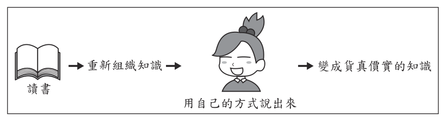

國中教育會考國文歷屆試題
開卷有益收錄國中教育會考「國文」民國 111–115 年的歷屆試題，共 5 份考卷、210 題，其中 210 題附有逐題詳解。每一份考卷都有獨立頁面，可以整卷看題目與答案，也可以直接線上作答。
線上練習 國文 →
本科概況
| 科目 | 國文（國中教育會考） |
|---|
| 題數 | 210 題 |
|---|
| 考卷份數 | 5 份 |
|---|
| 涵蓋年份 | 民國 111–115 年 |
|---|
| 詳解 | 210 題（100%） |
|---|
| 資料來源 | 心測中心 會考歷屆試題（依著作權法 §9，考試試題不受著作權保護） |
|---|
| 費用 | 免費，不需註冊，無廣告 |
|---|
白話與文言閱讀、字音字形、語文表達與題組閱讀。
歷年考卷（5 份）
點任一年度可看整份試題與標準答案。
題目長什麼樣
以下自本科題庫抽 5 題示例，完整題目請看上方各年度考卷。
第 1 題
下列文句中的「即」字，何者為「靠近」之意？
- （A）被熱水燙傷之後，應該立「即」用大量冷水沖洗
- （B）他們兩個人的關係若「即」若離，真令人難以捉摸
- （C）本活動摸彩中獎者，憑票根「即」可至服務臺領取獎品
- （D）我不是你的傭人，別以為我可以招之「即」來，揮之即去
答案：（B）
詳解與考點
正解：「即」的「靠近」義。「若即若離」中的「即」是靠近，整個詞指忽近忽遠，B 正確。
A：「立即」的「即」是立刻。
C：「即可」的「即」是就、便。
D：「招之即來，揮之即去」的「即」是就。它看起來對，是因為都可譯為迅速發生，但並非「靠近」的意思。
本題考點：文言虛詞多義——判斷詞義要放回固定語詞與句意；「若即若離」的「即」表靠近，「立即」表立刻，「即可」與「即來」表就、便。
第 1 題
根據資料，右側詐騙簡訊使用了哪一種話術？

本題選項為上圖中的 A／B／C／D，請對照圖片作答。
答案：（D）
詳解與考點
正解：簡訊中的「逾期未繳」、「三日內繳費」與「逾期將終止供水」連續設定期限和後果，關鍵是以急迫感逼收訊者立刻行動。這符合特徵④「引發情緒反應、營造迫切採取行動的氛圍」，D 為正解。
A：簡訊沒有用親切友善的語氣建立關係，而是以終止供水施加壓力。
B：簡訊沒有編造值得同情的個人故事。
C：簡訊沒有宣稱與收訊者有相似經歷或身分。
本題考點：詐騙話術辨識——看到限期、罰則或重大損失時，先辨識其是否藉急迫感催促行動；訊息比對——依簡訊實際用語判斷話術類型，不把未出現的情節或關係套入。
第 1 題
這則粉絲專頁貼文的用意，最可能是下列何者？

- （A）徵求粉絲專頁新小編
- （B）預告直播促銷的期程
- （C）暗示秋刀魚產季將近
- （D）宣布調漲秋刀魚價格
答案：（D）
詳解與考點
正解：題幹問粉絲專頁貼文的用意，圖文以秋刀魚成本上漲、漁獲減少等訊息帶出價格變動，重點是宣布調漲秋刀魚價格，D 為正解。
A：貼文沒有徵求新小編的資訊。
B：貼文沒有預告直播促銷的期程。
C：貼文重點是成本與漁獲造成的價格調整，不是暗示秋刀魚產季將近。它看起來對，是把秋刀魚相關訊息誤讀成產季預告，忽略貼文的價格語氣。
本題考點：實用文本理解——須整合圖文中的原因與行動訊息；主旨判準——成本上漲與漁獲減少指向售價調整，而非徵人、直播或產季預告。
第 1 題
以下是一則論文摘要：「本文旨在說明臺灣國民小學至大學學生閱讀興趣與閱讀素養的關係，以及不同學齡階段的讀寫素養表現。不論年級，閱讀興趣與閱讀素養有正向關聯，然由一般學生投資於閱讀的時間反映出閱讀興趣有加強之必要。」若要以這段文字的核心概念標示一組關鍵詞，下列何者最恰當？
- （A）臺灣、學齡階段
- （B）國民小學、大學
- （C）正向關聯、閱讀時間
- （D）閱讀興趣、閱讀素養
答案：（D）
詳解與考點
正解：摘要反覆說明「閱讀興趣」與「閱讀素養」的關係，且以兩者的正向關聯為研究核心，故 D 最能標示全文關鍵詞。
A：「臺灣、學齡階段」只指出研究地點與範圍，未呈現核心議題。
B：「國民小學、大學」只是受試者的學段。
C：「正向關聯」是研究結論，「閱讀時間」是輔助觀察，未如 D 直接指出兩個主要概念。
本題考點：關鍵詞擷取——選能涵蓋研究對象、主要變項與核心關係的詞；研究地點、學段與單一結論通常不如核心概念具代表性。
第 1 題
這張圖最可能在傳達下列何種訊息？

- （A）透過大量傳播，知識就會變成真理
- （B）與其獨自苦讀，不如多與他人交流
- （C）反覆誦讀，有助於將資訊內化為大腦深層的記憶
- （D）能統整所學並轉述給別人，才算是真正掌握知識
答案：（D）
詳解與考點
正解：圖示的流程由讀書、重新組織知識到用自己的方式說出來，最後才成為真知識，關鍵在「統整後轉述」。能統整所學並轉述給別人，才表示真正掌握知識，故 D 為正解。
A：圖中沒有主張知識經大量傳播就會變成真理，錯誤。
B：圖示重點不是與他人交流，而是自己重新組織並說出知識，錯誤。
C：反覆誦讀未呈現圖中的「重新組織、轉述」步驟，錯誤。
本題考點：圖文訊息判讀——依箭頭流程找出起點、關鍵轉化與結果；核心訊息判準——選項須同時對應「重新組織」及「用自己的方式說出來」，不可只擷取讀書或記憶等局部概念。
國中教育會考其他科目
題目與標準答案出自心測中心 會考歷屆試題（依著作權法 §9，考試試題不受著作權保護），依《著作權法》第 9 條為非著作權標的，得自由利用；
本專案撰寫的詳解以 CC0 1.0 貢獻至公眾領域。詳解為 AI 整理的學習輔助，並非官方標準答案。